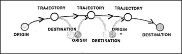

Whenever we consider an action, such as moving from one place to another, we almost always have particular concerns like these:
Where does the action start? Where does it end? What instrument is used? What is its purpose or goal? What are its effects? What difference will it make?
We could represent several of these questions with a simple diagram, which we'll call the Trans-frame.
In the early 1970s, Roger Schank developed ways to represent many situations in terms of a relatively few kinds of relations which he called conceptual dependencies. One of these, called P-Trans, represents a physical motion from one place to another. Another, called M-Trans, represents the sort of mental transportation involved when John tells Mary his telephone number; some information moves from John's memory to Mary's memory. A third type of conceptual dependency, called A-Trans, represents what is involved when Mary buys John's house. The house itself doesn't move at all, but its ownership is transferred from John's estate to Mary's estate.
But why should we want to represent, in the same way, three such different ideas: transportation in space, transmission of ideas, and transfer of ownership? I suspect that it is for the same reason that our language uses the same word fragment trans for all of them: this is one of those pervasive, systematic cross-realm correspondences that enables us to apply the same or similar mental skills to many different realms of thought. For example, suppose you were to drive first from Boston to New York, and then from New York to Washington. Obviously the overall effect would be equivalent to driving from Boston to Washington — but that wouldn't be so obvious unless you used a certain kind of mental chaining skill. Similarly, if John told you his phone number, and you then told it to Mary, this would end up much as though John had told Mary directly. And if you first bought John's house and then sold it to Mary, the net result, again, would be as though Mary had bought it directly from John. All three forms of Trans-frames can be used in chains! This means that once you learn efficient chain-manipulating skills, you can apply them to many different kinds of situations and actions. Once you know how to do it, constructing mental chains seems as easy as stringing beads. All you have to do is replace each Trans-frame's Destination with the next one's Origin.
